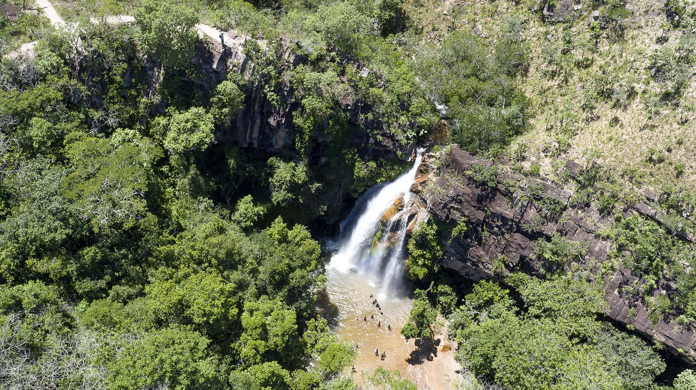

📷 MTur Destinos · Domínio públicoCerrado elevado com cachoeiras de 86m, cânions de arenito vermelho, araras vermelhas e o Centro Geodésico da América do Sul. Tudo isso a 70 km de Cuiabá — e com horários que você precisa respeitar para entrar.
Voo: Cuiabá é bem conectada — voos diretos de São Paulo (GRU/CGH), Rio de Janeiro, Brasília e Goiânia. Latam, Gol e Azul operam. Compre com antecedência: passagem costuma sair R$ 400–900 i/v.
De carro de Cuiabá: MT-251 (Rodovia Emanuel Pinheiro) por 70 km. Menos de 1h. Asfalto em boa parte — a estrada piora nos últimos 12 km de terra para algumas atrações.
Ônibus de Cuiabá: saídas da Rodoviária de Cuiabá, empresa Expresso Mato Grosso. ~1h30, R$ 25–40. Mas sem carro na cidade você ficará limitado — alugue carro em Cuiabá (a partir de R$ 120/dia).
Compare preços e disponibilidade — reserve com cancelamento grátis
Buscar hospedagens no Trivago →